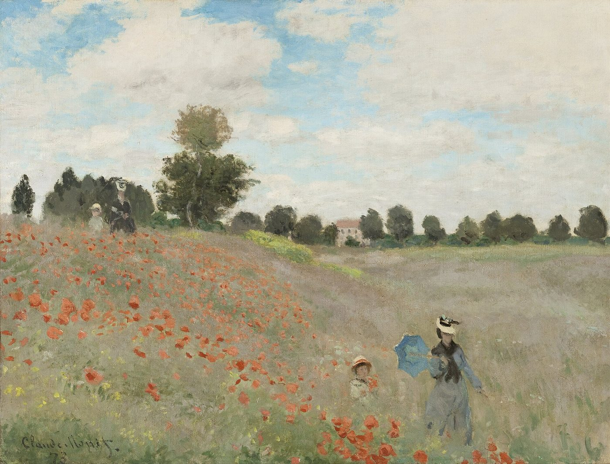
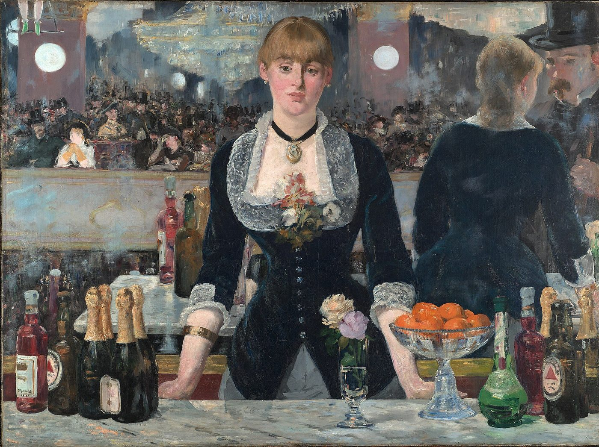

Quatre constructions, une règle d'or
Une phrase hypothétique a deux parties : la condition, introduite par si, et la conséquence. Le temps de la condition détermine le temps de la conséquence. A conditional sentence has two parts: the condition, introduced by si (if), and the result. The tense of the condition decides the tense of the result.
Possible · Possible
Imaginaire · Imaginary
Passé → passé · Past → past
Passé → présent · Past → present
La condition peut se placer au début ou à la fin : Si j'ai le temps, je viendrai = Je viendrai si j'ai le temps. Devant il et ils, si devient s' : s'il, s'ils. The condition can come first or last in the sentence. Before il and ils, si becomes s': s'il, s'ils (but si elle, si on).
Chaque point est suivi d'exercices corrigés immédiatement. Les erreurs apparaissent dans le cadre « À revoir », et tous les corrigés sont à la fin. Each point is followed by exercises that are corrected straight away. Your mistakes appear in the “À revoir” box, and all the answers are at the end.
Si + présentThe possible or real condition
La condition est réelle ou possible. La conséquence dépend du sens. The condition is real or possible. The tense of the result depends on the meaning.
Si + imparfaitThe imaginary or unlikely condition
La situation est imaginaire ou peu probable, dans le présent ou le futur. On l'utilise aussi pour donner un conseil poli : si j'étais vous…, si j'étais toi… The situation is imaginary or unlikely, in the present or the future. It is also used to give polite advice: si j'étais vous… (if I were you…).
L'imparfait
radical de nous au présent + -ais, -ais, -ait, -ions, -iez, -aientnous lis
exception : être → j'étais Imperfect: the stem of the nous form in the present + the endings. One exception: être → ét-.
Le conditionnel présent
radical du futur + -ais, -ais, -ait, -ions, -iez, -aientvisiter → je visiterais
prendre → je prendrais Present conditional: the future stem + the imperfect endings. It is the French equivalent of would + verb.

Si + plus-que-parfaitThe unreal condition in the past
La condition ne s'est pas réalisée dans le passé, et la conséquence est passée elle aussi. On exprime un regret ou un reproche. The condition did not happen in the past, and the result is in the past too. It expresses a regret or a reproach.
Le plus-que-parfait
avoir ou être à l'imparfait + participe passéj'avais lu · nous étions partis Pluperfect: avoir or être in the imperfect + past participle, like had + past participle in English.
Le conditionnel passé
avoir ou être au conditionnel présent + participe passéj'aurais lu · nous serions partis Past conditional: avoir or être in the present conditional + past participle, like would have + past participle.
Si + plus-que-parfait, conséquence présentePast condition, present result
La condition concerne le passé, mais la conséquence concerne le présent. Des mots comme aujourd'hui, maintenant, en ce moment le signalent souvent. The condition is about the past, but the result is about the present. Words such as aujourd'hui (today), maintenant (now) and en ce moment (right now) often signal it.
Conséquence passée (3)
Si j'avais pris ce train, j'aurais visité Lyon hier.If I had taken that train, I would have visited Lyon yesterday.Conséquence présente (4)
Si j'avais pris ce train, je serais à Lyon en ce moment.If I had taken that train, I would be in Lyon right now.Comment choisir ? How to choose?
Reconnaître et construireRecognise and build
BilanFinal check
À l'oral : et si… ?
Speaking: what if…?Répondez à voix haute, par des phrases complètes. Le type d'hypothèse à utiliser est indiqué sous chaque question. Un exemple de réponse est proposé, à consulter après avoir parlé. Answer out loud, in full sentences. The type of hypothesis to use is shown under each question. A sample answer is given: look at it only after you have spoken.
1Questions personnelles · Personal questions
Voir un exemple de réponse · See a sample answer
Si je vais en France l'été prochain, je visiterai la Provence et je me promènerai dans les champs de lavande. If I go to France next summer, I'll visit Provence and I'll walk through the lavender fields.
Voir un exemple de réponse · See a sample answer
Si un ami vient dans ma ville pour la première fois, je l'emmène d'abord au bord de la rivière, puis nous dînons dans mon restaurant préféré. If a friend comes to my town for the first time, I take them to the river first, then we have dinner at my favourite restaurant.
Voir un exemple de réponse · See a sample answer
Si je pouvais dîner avec un écrivain français, je choisirais Victor Hugo : je lui parlerais des « Misérables ». If I could have dinner with a French writer, I would choose Victor Hugo: I would talk to him about Les Misérables.
Voir un exemple de réponse · See a sample answer
Si j'habitais à Paris, j'irais au marché le matin et je me promènerais au jardin du Luxembourg l'après-midi. If I lived in Paris, I would go to the market in the morning and I would walk in the Luxembourg Gardens in the afternoon.
Voir un exemple de réponse · See a sample answer
Si je pouvais emporter un seul tableau, je prendrais « Les Coquelicots » de Monet. If I could take home just one painting, I would take Monet's Poppy Field.
Voir un exemple de réponse · See a sample answer
Si j'avais vécu à Paris en 1900, j'aurais voulu voir l'Exposition universelle et la toute première ligne de métro. If I had lived in Paris in 1900, I would have wanted to see the World's Fair and the very first metro line.
Voir un exemple de réponse · See a sample answer
Si je n'avais pas choisi mon métier, j'aurais été photographe ou guide touristique. If I hadn't chosen my profession, I would have been a photographer or a tour guide.
Voir un exemple de réponse · See a sample answer
Si j'avais appris le français dans mon enfance, je le parlerais couramment aujourd'hui et je regarderais des films français sans sous-titres. If I had learnt French as a child, I would speak it fluently today and I would watch French films without subtitles.
2Jeu de rôle : un week-end en Provence · Role play: a weekend in Provence
Une personne veut passer un long week-end en Provence. Un ami qui habite à Aix-en-Provence l'aide à organiser son séjour. Jouez la scène, puis échangez les rôles. Someone wants to spend a long weekend in Provence. A friend who lives in Aix-en-Provence helps to plan the trip. Act out the scene, then swap roles.
Rôle A · L'ami qui habite à Aix
- Expliquez ce qui se passera si votre ami arrive vendredi soir. (type 1)Explain what will happen if your friend arrives on Friday evening.
- Donnez un conseil : « Si tu veux…, réserve… ». (type 1, impératif)Give some advice using the imperative.
- Proposez une autre idée : « Si tu louais une voiture, tu pourrais… ». (type 2)Suggest another idea.
- Rappelez une occasion manquée : « Si tu étais venu en juillet, … ». (type 3)Mention a missed opportunity.
Rôle B · La personne en visite
- Décrivez votre rêve : « Si j'avais une maison en Provence, je… ». (type 2)Describe your dream.
- Exprimez un regret : « Si j'avais réservé plus tôt, … ». (type 3)Express a regret.
- Parlez des conséquences aujourd'hui : « Si j'avais appris à cuisiner, je… maintenant ». (type 4)Talk about the consequences today.
- Posez une question à votre ami : « S'il pleut samedi, … ? ». (type 1)Ask your friend a question.
3Entrez dans le tableau · Step into the painting

Imaginez que vous êtes aux Folies-Bergère, à Paris, en 1882. Parlez pendant deux minutes en utilisant les quatre constructions. Imagine you are at the Folies-Bergère, in Paris, in 1882. Speak for two minutes using all four structures.
Cochez les constructions que vous avez utilisées. Tick the structures you have used.
À revoir
To review: your answer, the correct answer, why, and the rule to remember.Corrigés Answers
Exercice 1 · Présent, futur ou impératif ?
- S'il fait beau dimanche, nous ferons une promenade le long de la Loire.If the weather is nice on Sunday, we'll go for a walk along the Loire.
- Si vous passez par Lyon, visitez le Vieux-Lyon !If you're passing through Lyon, visit the old town!
- Si on chauffe de l'eau à 100 degrés, elle bout.If you heat water to 100 degrees, it boils.
- Si le musée est fermé demain, je me promènerai au jardin des Tuileries.If the museum is closed tomorrow, I'll go for a walk in the Tuileries Garden.
- Si tu aimes le fromage, goûte le comté : il est délicieux.If you like cheese, try Comté: it's delicious.
- Si j'ai un week-end libre en mai, j'irai à Bordeaux.If I have a free weekend in May, I'll go to Bordeaux.
- Si je bois du café le soir, je ne dors pas.If I drink coffee in the evening, I don't sleep.
Exercice 2 · Conjuguer : si + présent
- Si tu viens à Paris en mai, je t'emmènerai au jardin du Luxembourg.If you come to Paris in May, I'll take you to the Luxembourg Gardens.
- S'il pleut demain, nous resterons à la maison.If it rains tomorrow, we'll stay at home.
- Si vous avez des questions, écrivez-moi.If you have any questions, write to me.
- Si nous partons tôt, nous arriverons à Marseille avant midi.If we leave early, we'll get to Marseille before midday.
- Si tu passes par Nice, mange une socca au marché.If you're passing through Nice, have some socca at the market.
- Si les prix augmentent, nous voyagerons moins cette année.If prices go up, we'll travel less this year.
Exercice 3 · Si + imparfait, conditionnel présent
- Si j'avais plus de vacances, je passerais un mois en Provence.If I had more holidays, I would spend a month in Provence.
- Si nous habitions à Paris, nous irions au théâtre tous les mois.If we lived in Paris, we would go to the theatre every month.
- Si tu étais libre ce week-end, tu viendrais à la mer avec nous ?If you were free this weekend, would you come to the seaside with us?
- Si je gagnais au loto, j'achèterais une maison en Normandie.If I won the lottery, I would buy a house in Normandy.
- S'il faisait moins chaud en août, je visiterais Paris plus souvent.If it were less hot in August, I would visit Paris more often.
- Si vous pouviez rencontrer un écrivain, lequel choisiriez-vous ?If you could meet a writer, which one would you choose?
- Si mes amis parlaient français, nous regarderions des films français ensemble.If my friends spoke French, we would watch French films together.
- Si j'étais toi, je prendrais le train plutôt que l'avion.If I were you, I would take the train rather than the plane.
Exercice 4 · Du projet au rêve
- Si j'avais le temps, je visiterais le musée Rodin.If I had time, I would visit the Rodin Museum.
- Si nous partions en avril, nous verrions la Bretagne au printemps.If we left in April, we would see Brittany in spring.
- Si tu lisais ce roman, tu comprendrais mieux la France.If you read this novel, you would understand France better.
- Si elle économisait maintenant, elle pourrait acheter un appartement.If she saved now, she could buy a flat.
- Si vous veniez à Lyon, vous iriez au marché.If you came to Lyon, you would go to the market.
- S'il avait assez d'argent, il ferait le tour de la France.If he had enough money, he would travel all around France.
Exercice 5 · Les regrets : si + plus-que-parfait
- Si j'avais réservé plus tôt, j'aurais eu une place pour le concert.If I had booked earlier, I would have got a seat for the concert.
- Si nous étions partis à l'heure, nous n'aurions pas raté le train pour Nice.If we had left on time, we wouldn't have missed the train to Nice.
- Si tu m'avais demandé conseil, je t'aurais recommandé ce restaurant.If you had asked me for advice, I would have recommended this restaurant to you.
- S'il avait lu la notice, il n'aurait pas cassé la machine à café.If he had read the instructions, he wouldn't have broken the coffee machine.
- Si vous étiez venus en juillet, vous auriez vu les champs de lavande en fleurs.If you had come in July, you would have seen the lavender fields in bloom.
- Si elle avait su que le musée était fermé, elle serait restée à l'hôtel.If she had known that the museum was closed, she would have stayed at the hotel.
- Si nous avions pris le TGV, nous serions arrivés plus tôt à Bordeaux.If we had taken the TGV, we would have arrived in Bordeaux earlier.
Exercice 6 · Hier ou aujourd'hui ?
- Si j'avais appris l'italien à l'école, je le parlerais couramment aujourd'hui.If I had learnt Italian at school, I would speak it fluently today.
- Si tu avais pris ton parapluie ce matin, tu ne serais pas trempé maintenant.If you had taken your umbrella this morning, you wouldn't be soaked now.
- Si nous étions partis plus tôt, nous aurions vu le début du film hier soir.If we had left earlier, we would have seen the beginning of the film last night.
- S'il avait suivi mes conseils l'an dernier, il serait moins stressé aujourd'hui.If he had followed my advice last year, he would be less stressed today.
- Si je n'avais pas découvert Paris à vingt ans, j'aimerais moins la France aujourd'hui.If I hadn't discovered Paris at twenty, I would love France less today.
- Si Gustave Eiffel n'avait pas construit sa tour, Paris serait différent aujourd'hui.If Gustave Eiffel hadn't built his tower, Paris would be different today.
- Si j'avais vu le message, j'aurais assisté à la réunion la semaine dernière.If I had seen the message, I would have attended the meeting last week.
Exercice 7 · Quelle hypothèse ?
- Si tu viens à Paris, je t'emmènerai à Montmartre. → type 1If you come to Paris, I'll take you to Montmartre.
- Si j'étais peintre, je peindrais la mer en Normandie. → type 2If I were a painter, I would paint the sea in Normandy.
- Si Napoléon avait gagné à Waterloo, l'histoire de l'Europe aurait été différente. → type 3If Napoleon had won at Waterloo, the history of Europe would have been different.
- Si j'avais acheté cette maison en 2010, je serais propriétaire aujourd'hui. → type 4If I had bought that house in 2010, I would be a homeowner today.
- S'il fait beau demain, nous pique-niquerons au parc. → type 1If the weather is nice tomorrow, we'll have a picnic in the park.
- Si nous avions plus de place, nous aurions un piano. → type 2If we had more space, we would have a piano.
- Si tu avais lu les critiques, tu n'aurais pas choisi ce film. → type 3If you had read the reviews, you wouldn't have chosen this film.
- Si vous aviez pris le train de nuit, vous seriez déjà à Nice. → type 4If you had taken the night train, you would already be in Nice.
Exercice 8 · Construire la phrase
- Si tu passes par Lyon, appelle-moi.If you're passing through Lyon, call me.
- Si j'avais plus de temps, je lirais Proust.If I had more time, I would read Proust.
- Si nous avions réservé, nous aurions vu la Joconde.If we had booked, we would have seen the Mona Lisa.
- Si j'avais appris le français plus tôt, je vivrais en France.If I had learnt French earlier, I would live in France.
Exercice 9 · Bilan : un week-end à Paris
- Si tu vas un jour à Paris, commence par le musée d'Orsay.If you go to Paris one day, start with the Musée d'Orsay.
- Si j'avais su que la file était si longue, j'aurais acheté mon billet en ligne.If I had known the queue was so long, I would have bought my ticket online.
- Si le temps le permettait, nous déjeunerions au jardin du Luxembourg.If the weather allowed, we would have lunch in the Luxembourg Gardens.
- Si j'avais grandi à Paris, je connaîtrais tous les cafés du Quartier latin aujourd'hui.If I had grown up in Paris, I would know every café in the Latin Quarter today.
- S'il y avait moins de monde, on verrait mieux les tableaux.If there were fewer people, we would see the paintings better.
- Si vous aimez les impressionnistes, vous adorerez l'Orangerie.If you like the Impressionists, you'll love the Orangerie.
- Si nous n'avions pas manqué le dernier métro, nous ne serions pas rentrés à pied.If we hadn't missed the last metro, we wouldn't have walked home.
- Si j'étais parisienne, je flânerais sur les quais tous les soirs.If I were Parisian, I would stroll along the banks of the Seine every evening.